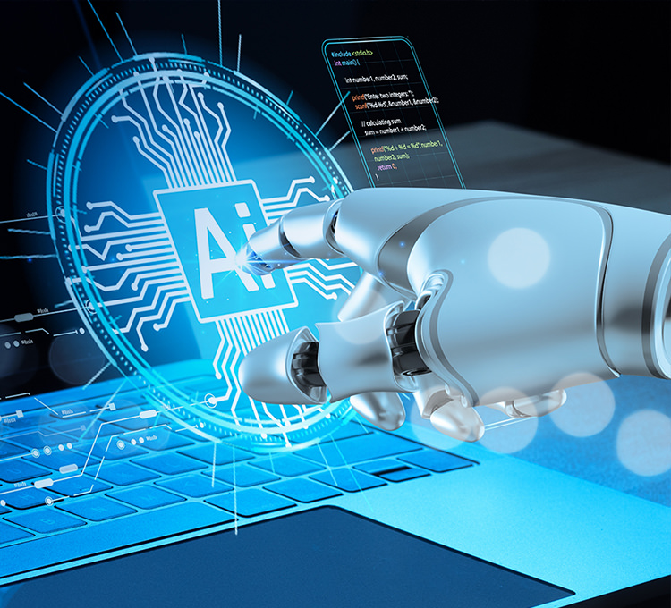

Materias que normalmente se cursan
- Fundamentos de programación y estructuras de datos.
- Matemáticas para la IA: álgebra lineal, cálculo y probabilidad.
- Aprendizaje automático (machine learning) y redes neuronales.
- Procesamiento de lenguaje natural.
- Visión por computadora.
- Ética y responsabilidad en tecnologías emergentes.

¿En qué puedes trabajar?
- Desarrollador de modelos de IA y machine learning.
- Ingeniero o científico de datos.
- Desarrollador de software inteligente para empresas.
- Investigador en universidades o centros de tecnología.
- Emprendedor en proyectos basados en IA.
Ventajas de estudiar esta carrera
- Alta demanda de profesionales en el mercado laboral.
- Posibilidad de trabajar en proyectos innovadores.
- Impacto directo en la solución de problemas reales.
- Oportunidad de seguir estudiando maestrías o especialidades.